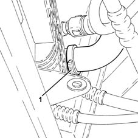
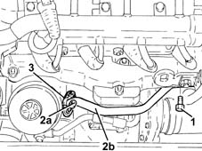
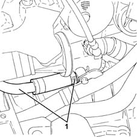

1088D53 RIGID supply or return PIPES for ENGINE OIL HEAT EXCHANGER - R.R.
- Path
- Procedures > 10 ENGINE > 1088 ENGINE COOLING > 1088D coolant hoses and sleeves > 1088D53 RIGID supply or return PIPES for ENGINE OIL HEAT EXCHANGER - R.R.
- Kind
- repair procedure (removal / refitting; the operation number is the code)
- Applies to
- engines: 1.3 JTD; all production periods
- Interactive page
- https://sloeber94.github.io/elrnDB-lYpsln/en/#/2429083
Applies to: engines: 1.3 JTD; all production periods
 Removing
Removing
 Refitting
RefittingPosition the vehicle on the ramp.
Proceed with removal .
1. Loosen the band and disconnect the lower radiator coolant outlet hose from the radiator, radiator side.

Applies to: engines: 1.3 JTD; all production periods
1. Undo the bolt fixing the rigid coolant supply pipe to the engine oil heat exchanger, crankcase side.
2. Undo bolts (2a) and disconnect the heat exchanger rigid delivery pipe (2b), engine oil heat exchanger side.
3. Remove the gasket.

Applies to: engines: 1.3 JTD; all production periods
1. Loosen the band, disconnect the engine oil heat exchanger rigid delivery pipe, thermostat end, and remove.

Applies to: engines: 1.3 JTD; all production periods
Refitting
RemovingPlace the rigid coolant supply pipe to the engine oil heat exchanger back in its housing, connect to the thermostat and fasten it using the bolts.
Place the gasket back in its housing.
Connect the rigid delivery pipe for the engine oil heat exchanger, heat exchanger side, and secure with bolts
Tighten the bolt fixing the coolant supply pipe to the engine oil heat exchanger, crankcase side.
Connect the lower coolant outlet hose from the radiator, radiator side, and tighten the band.
Refill the engine cooling system with coolant 0010T20 coolant change .
Proceed with refitting .
Remove the car from the ramps.